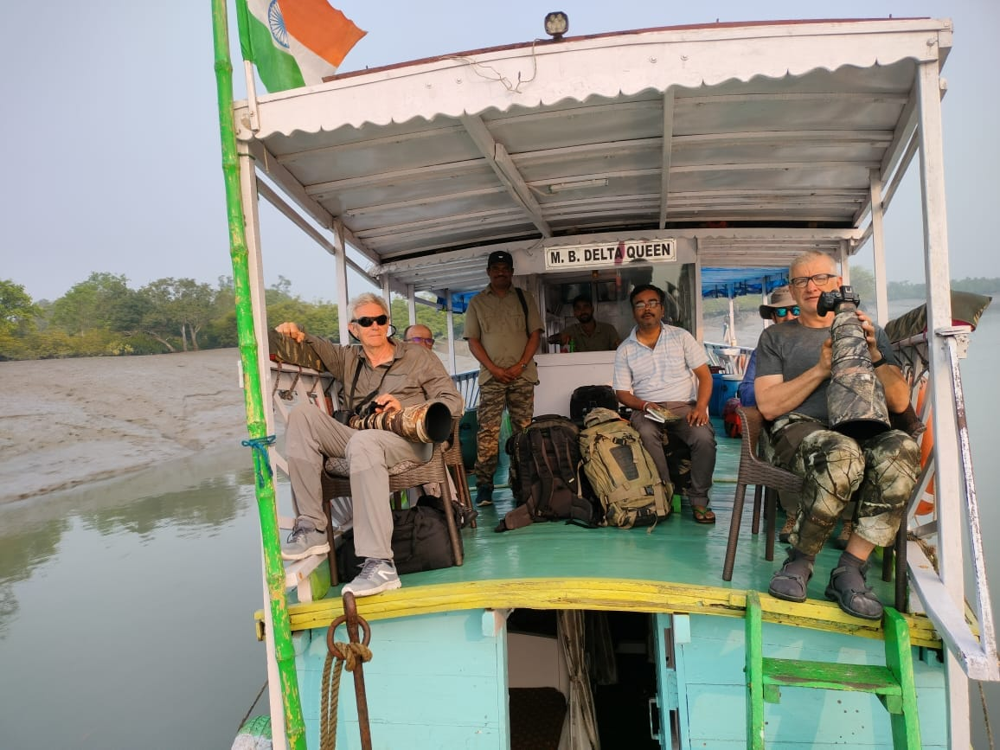

Rest Between River Days
Space to unwind after long hours exploring tidal creeks and forest edges, and to recharge before another day outdoors.
Eco-friendly wildlife stays. Thoughtful comfort, a connection to the landscape, and a base for discovering the living Sundarbans.

In the Sundarbans, the experience is shaped by tides, quiet waterways, changing light and the rhythms of life around the mangroves. A stay here can be more than a stop between safaris. It can be part of your connection to the landscape.
We help guests plan their accommodation and wildlife exploration as one joined-up journey, with time to rest, observe and appreciate this fragile ecosystem.
A thoughtfully chosen stay should complement your time in the forest, not distract from it. We focus on the feel of the place, the practical needs of your journey and a respectful approach to the environment.
Space to unwind after long hours exploring tidal creeks and forest edges, and to recharge before another day outdoors.
Experience the surroundings and local atmosphere of the Sundarbans region rather than treating the destination as just a checklist of sights.
Coordinate your stay with boat journeys, wildlife interests, photography goals and the pace that suits your group.
A quiet morning, the view from the water, conversations with local people and the feeling of being away from the rush. The Sundarbans is not only a destination to cover. It is a landscape to spend time in.

Choose a stay that feels connected to the setting and gives you room to slow down and notice your surroundings.

Build in moments for the river, open skies and the changing atmosphere of the mangrove landscape.
The Sundarbans is a sensitive ecosystem. Responsible travel is not a marketing badge; it is a collection of choices made by visitors, hosts and operators. We encourage practical habits that help keep the experience respectful.
Leave natural areas undisturbed. Avoid littering, loud behaviour and actions that disrupt wildlife or local life.
Be conscious of water, electricity and single-use materials during your stay, especially in remote areas.
Be considerate when photographing people, ask permission and value the people who live and work in the region.
Observe from a respectful distance. Never pressure guides or operators to approach, chase or disturb animals for a photograph.

Accommodation and expedition planning can be shaped around the people travelling, how much time you have and what you hope to experience. Tell us what matters most, and we can discuss a realistic plan.
The Sundarbans is remote, tidal and shaped by weather and local conditions. Comfort levels, facilities and connectivity can vary from one accommodation to another. We recommend confirming the specific property, facilities and arrangements before booking.
Wildlife sightings are never guaranteed. A responsible trip leaves room for observation, patience and the unexpected.
Pair your accommodation with an experience designed around what you want to explore.
No certification is implied here. Accommodation options and their environmental practices should be checked individually before booking.
Yes. We can discuss a coordinated stay and expedition plan based on your dates, interests, group size and available arrangements.
It can be. The right plan depends on the group's needs, comfort expectations, mobility and the activities selected.
Tell us your preferences and budget. We can discuss available options and confirm the details before you commit.
Start with your travel dates, group and interests. We’ll help you shape a stay and wildlife journey that fits the realities of this unique landscape.
Discuss Your Stay on WhatsApp